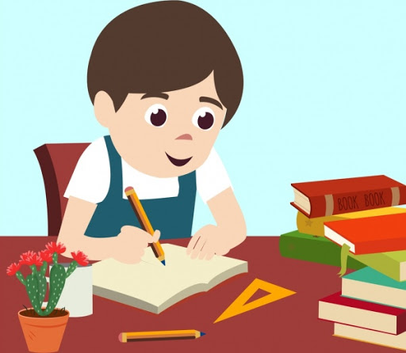

YAKINLAH, MENULIS ITU MENYENANGKAN
Oleh Ayu Susanti
Setiap bulan rutinitas saya sekarang adalah membaca satu per satu tulisan yang dikirimkan oleh man-teman Askot dari tujuh kota/kabupaten se-Provinsi Sumatera Selatan. Tulisan-tulisan tersebut sekarang mewarnai hidup. Saya jadi semakin akrab dengan gaya-gaya penulisan dari teman-teman fasilitator. Ada yang menulis dengan gaya serius. Ada juga yang menulis dengan malu-malu. Beberapa malah menulis seperti orang sedang tersesat, kehilangan arah. Lalu yang lain menulis seperti berada dalam “komidi putar”. Masih banyak gaya lainnya, yang jika saya analogikan, bisa menghabiskan lebih dari ratusan paragraf. Tapi sungguh, saya acungkan jempol kepada usaha teman-teman fasilitator dalam menulis, walau kadang unsur keterpaksaan terlihat jelas dari beberapa tulisan yang disajikan.
Membayangkan bagaimana suasana hati teman-teman yang menulis tanpa meneguk rasa nikmat menulis, membuat saya tersenyum miris. Berbekal alasan sekadar menggugurkan tanggung jawab, karena menulis Best Practice merupakan salah satu kewajiban dan masuk sebagai salah satu laporan bulanan, membuat tulisan-tulisan tersebut kehilangan ruhnya.
Saya tidak terlalu berharap akan menemukan tulisan Best Practice di antara berpuluh tulisan yang masuk. Karena, ketika seseorang menulis tanpa dilandasi hati maka mustahil sebuah “Best Practice” muncul.
Mari kita merenungkan sebentar. Jika diibaratkan dua orang yang sedang berbincang, tulisan adalah ucapan atau perkataan dari seseorang yang bercerita (penulis), dan pembaca adalah orang yang diajak berbincang. Apa asyiknya berbincang dengan orang terpaksa, memasang muka bertekuk lima, yang sesekali mengeluh? Dapat dipastikan jawabannya adalah tidak asyik!
Seperti itu juga yang terjadi dengan sejumlah tulisan yang mampir via email setiap bulannya. Terkadang saya harus mengeryitkan dahi untuk mengerti apa topik cerita yang disajikan, karena kalimat demi kalimat yang disajikan tidak membuat “enjoy” saat dibaca.
Melihat fenomena yang terus berulang setiap bulannya, sayapun berinisiatif, mencoba memberi arah kepada teman-teman yang “tersesat”, dengan menentukan tema tulisan, bergilir di setiap bulannya. Ternyata hal ini cukup efektif. Bravo! Sekarang tulisan teman-teman sudah lebih terarah dan fokus pada satu permasalahan, walau permasalahan “tidak enjoy” kadang masih terlihat.
Berdasarkan hasil uji petik yang dilakukan di beberapa kota/kabupaten, ternyata permasalahan menulis, yang juga menjadi permasalahan nasional ini, bersumber dari mispersepsi tentang makna “Best Practice”. Yang terdoktrin di benak teman-teman fasilitator adalah “cerita terbaik”. Artinya cerita tersebut harus bersumber dari kelurahan/desa yang “baik”, dari sisi keorganisasian dan kegiatan yang dilakukan. Bagaimana dengan teman-teman fasilitator yang kebagian mendampingi kelurahan/desa yang bisa dibilang “amburadul” dari sisi organisasi dan kegiatan? Nah, teman-teman inilah yang akhirnya mesti menulis “Best Practice” sambil menekuk muka dan mengernyitkan dahi.
Padahal, tanpa disadari, “Best Practice” yang sesungguhnya lebih dekat kepada teman-teman pendamping kelurahan/desa yang disebut “amburadul” tadi. Karena, ketika teman-teman melakukan suatu perbaikan dari si wilayah “amburadul” ini, otomatis hal tersebut jadi bahan yang bisa diolah menjadi menu lezat “Best Practice”. Hanya dengan menggunakan rumus 5W+1H sebuah tulisan Best Practice pun akan tercipta.
Memang kita harus berpikir out of the box. Tapi jangan sampai kita berpikir terlalu “out” alias jauh, sehingga hal yang di dekat malah terabaikan. Jangan terlalu sibuk memikirkan tema yang begitu bagus, hingga akhirnya malah tak jadi menulis. Menulislah dengan hati. Menulis dengan bersikap seperti kita berbicara kepada seseorang. Dengan memerhatikan siapa yang kita akan ajak bicara. Itu akan membawa gaya tulisan kita. Seperti saat kita berbicara dengan orang tua maka tulisan kita akan bergaya resmi. Sedangkan saat berbicara dengan teman sebaya, tulisan kita akan lebih lebih santai.
Saya bukanlah seorang pujangga yang pandai merangkai kata. Saya juga pastinya tidak pantas jika harus disebut sebagai seorang penulis, tapi saya suka menulis. Dengan membuat tulisan ini, saya hanya ingin teman-teman pun merasakan nikmatnya menulis. Karena, sungguh, menulis itu sangat menyenangkan